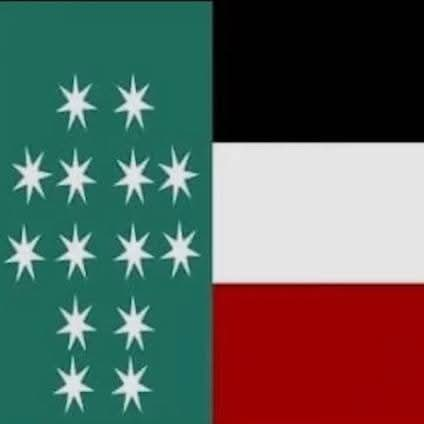

LAMBANG NEGARA REPUBLIK MELANESIA BARAT
 mambruk dan cendrawasi
mambruk dan cendrawasi
BENDERA NEGARA REPUBLIK MELANESIA BARAT
 bendera bintang 14/bendera salib kristusARTI WARNA:
HITAM: kulit orang melanesia
PUTIH: tulang dan kesucian perjuangan damai proklamasi 14 desember 1988
MERAH: pengorbanan orang melanesia dalam perjuangan
HIJAU: kekayaan dan kesuburan tanah melanesia
BINTANG BERKAKI 7: 6 hari lamanya boleh bekerja tapi hari ke 7 adalah hari sabat
BINTANG BERBENTUK SALIB: melanesia adalah tanah injil dan perjanjian
LAGU KEBANGSAAN NEGARA REPUBLIK MELANESIA BARAT

 hai tanahku melanesia
hai tanahku melanesia
WILAYAH NEGARA REPUBLIK MELANESIA BARAT
 peta melanesia barat
peta melanesia barat